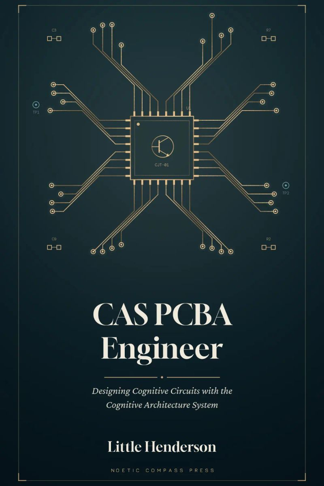
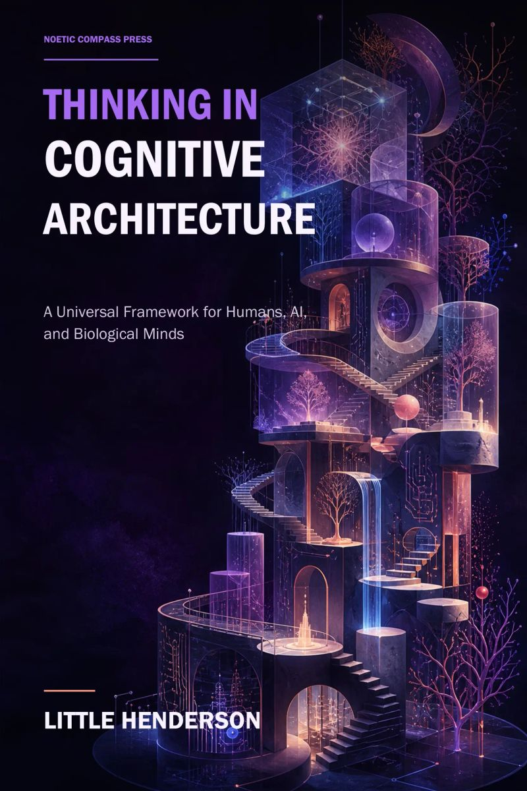
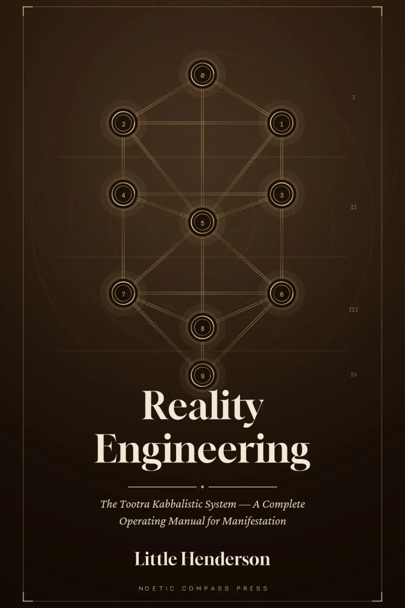

Amazon Leo
Quality Inspection Technician III · Level 3
Signal Pathway Verification, flight-grade PCBA inspection, fault isolation, and traceability. Initially engaged through Trigo Global Quality Solutions.
Quality. Inquiry. Systems.
View résumé ↗From flight-grade hardware
to inspectable software.
I’m Little Henderson, an aerospace quality inspection technician and AI interpretability developer.
My work connects two disciplines: inspecting high-reliability electronics and building tools that make complex software easier to examine. The practice is consistent: define the criteria, instrument the system, isolate the defect, and document the finding.
I previously worked at Amazon Leo, formerly Project Kuiper. Alongside my quality experience, I develop Noetic Compass and the Cognitive Architecture System (CAS), while pursuing a B.S. in Computer Science.
Read the full résumé ↗Quality Inspection Technician III · Level 3
Signal Pathway Verification, flight-grade PCBA inspection, fault isolation, and traceability. Initially engaged through Trigo Global Quality Solutions.
Quality Inspector
Inspected printed circuit assemblies, applied space hardware workmanship criteria, and collaborated with engineering teams on quality and process improvements.
Quality Control Lead Inspector
Line quality monitoring, inspection records, specification conformance, and quality process improvement.
Product Expert
Customer support, form and data review, account accuracy, and product quality checks.
Independent research and engineering.
Designed to be inspected and challenged.
A Python toolkit for cross-model interpretability experiments, hidden-state probing, layer sweeps, and ablation-based checks. Experimental findings require controls; CAS-specific interpretations remain bounded by validation.
The work includes matched-taxonomy controls and documentation of negative findings. It is research tooling, with no claim of proven general intelligence.
A CAS-based research workspace bringing scenario evaluation, model comparison, symbolic tooling, and interactive representations together.
Explore Noetic Compass ↗Noetic Compass is a research-stage AI assessment and exploration platform built on the Cognitive Architecture System (CAS). It brings scenario-based evaluation, model comparison, symbolic tooling, and interactive representations into one workspace for examining how AI responses are structured.
A searchable library of 238 scenarios across 11 categories spans AI safety, adversarial reasoning, education, finance, governance, healthcare, and other applied settings.
The platform organizes analysis around cognitive operators, processing domains, core drives, prerequisite chains, and structural inconsistencies. Its assessment workflow presents a Noetic Compass Composite Score (NCCS) and component-level scoring.
Tools support comparing models on the same prompt, reviewing evaluation traces, collecting human ratings, and checking test–retest reliability.
Additional modules include a CAS notation and natural-language compiler interface, an Idea Atlas for mapping concepts, research-preview risk checks, and synchronized visual/audio representations of CAS structures.
Designed for research and exploration, Noetic Compass makes its scoring methods and limitations visible. Its assessments are research-stage outputs with empirical validation pending, rather than deployment certifications.
Open Noetic CompassCAS Native — an inspectable-by-design model architecture under development. Register bypass and the cost of inspectability are open technical questions.
Explore GitHub ↗PCBA inspection · Signal Pathway Verification · Fault isolation · NCR documentation · First article inspection · Calibration checks · ESD & FOD control · Traceability
Python · C++ · Rust · TypeScript / JavaScript · React · SQL · PyTorch / Hugging Face · Experimental design · Technical documentation
B.S. Computer Science, AI emphasis
Full Sail University — in progress
Python for Data Analysis
UC Santa Cruz Silicon Valley Extension, 2022
IPC-A-610 · IPC J-STD-001 · Space Applications Addendum · IPC/WHMA-A-620
Certification records listed in the owner-provided résumé; current validity has not been independently checked.
Three books connecting cognitive architecture, engineering representation, and the Tootra framework.

Designing Cognitive Circuits with the Cognitive Architecture System
An engineering-style guide to the CAS framework, using component datasheets, circuit schematics, board designs, and testing methods.
Explore audiobook
A Universal Framework for Humans, AI, and Biological Minds
Introduces the CAS vocabulary of ten Noetics, four processing domains, and seven core drives, then explores cognitive states, prerequisite chains, and AI assessment.
Explore audiobook
The Tootra Kabbalistic System — A Complete Operating Manual for Manifestation
An exploration of the Tootra Kabbalistic System through its concepts, notation, and practical workshops on intention and change.
Explore audiobookTechnical writing on the framework, its development, and research methods.
An earlier written framework that informed the later CAS work.
Have a system to improve?
A question to explore?